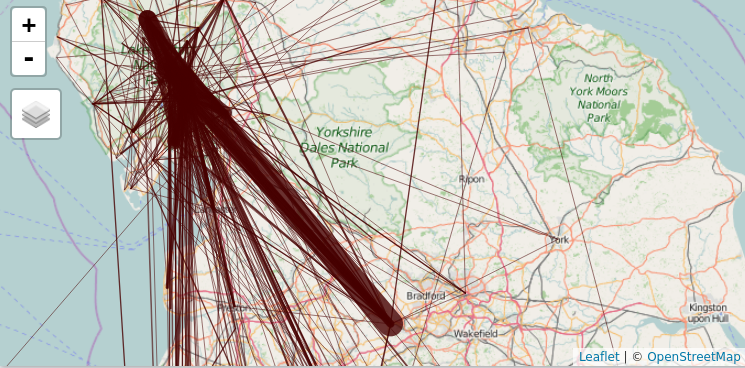

We looked into how to reduce car use in the Lake district, using data on travel patterns.
Instead of starting with a plan and implementing it, we started with the data and developed a plan based on an analysis of that data.
All the code and data behind this hack is open access, and can be found on the team’s GitHub repo. If you have a GitHub account, feel free to fork/contribute to the project, for example by editing this frontpage!
Here you can find some of the outputs for the CycleStreets.net team for the TransportHack event.
A map of likely routes that cyclists represented in the Lake District origin-destination dataset took while visiting the area.
A map of the most common car journeys into the Lake District based on processing the same dataset.
A picture can tell a story of a thousand words. The figures and code snippets showed below help show what we’ve been up to!
A key challenge was to process the origin-destination dataset of visitor travel demand so it could be displayed in a meaningful way on a map. The first stage was to extract the data from the proprietary .xls format and put it into an open source software friendly csv file, which also displays natively on GitHub. This was done with the following code:
f = "data/LD%20origin-destination%20summary.xls"
odf = readxl::read_excel(f)
write.csv(odf, "data/od-summary.csv")A sample of this data is provided below:
| StartDestName | EndDestName | CarJourneys | FootJourneys |
|---|---|---|---|
| Grasmere | Ambleside | 38 | 21 |
| Langdales | Ambleside | 38 | 3 |
| Windermere | Ambleside | 29 | 7 |
| Ambleside | Keswick | 28 | 1 |
Then we used the open source transport planning add-on to R, stplanr, to convert the flows into the formal SpatialLinesDataFrame class. This work was done in the flowgen.R script file:
cents = spTransform(cents, CRS("+init=epsg:4326"))
f = od2line(odf, cents)Google was used to geocode the place names, which were not provided.
A snapshot of the kind of visualisation provided by this is illustrated below.
